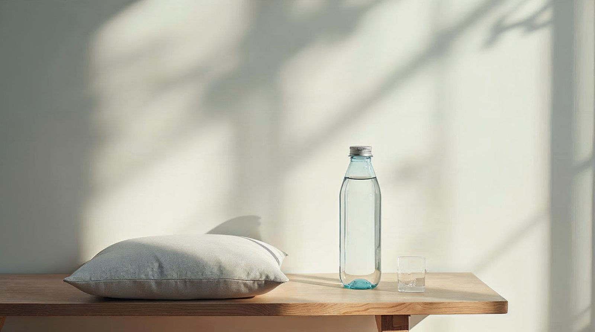
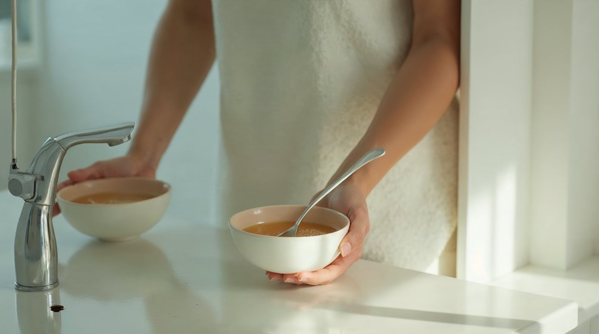
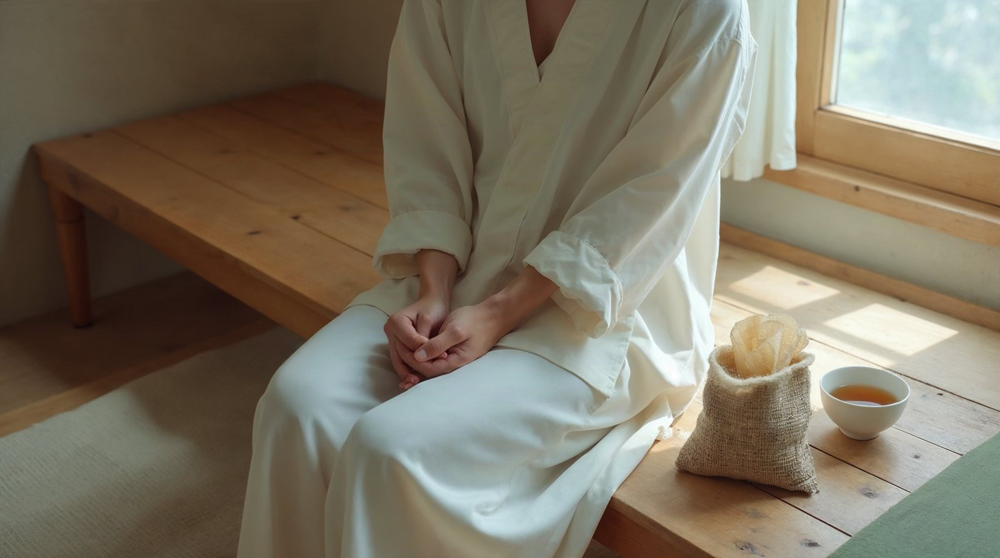
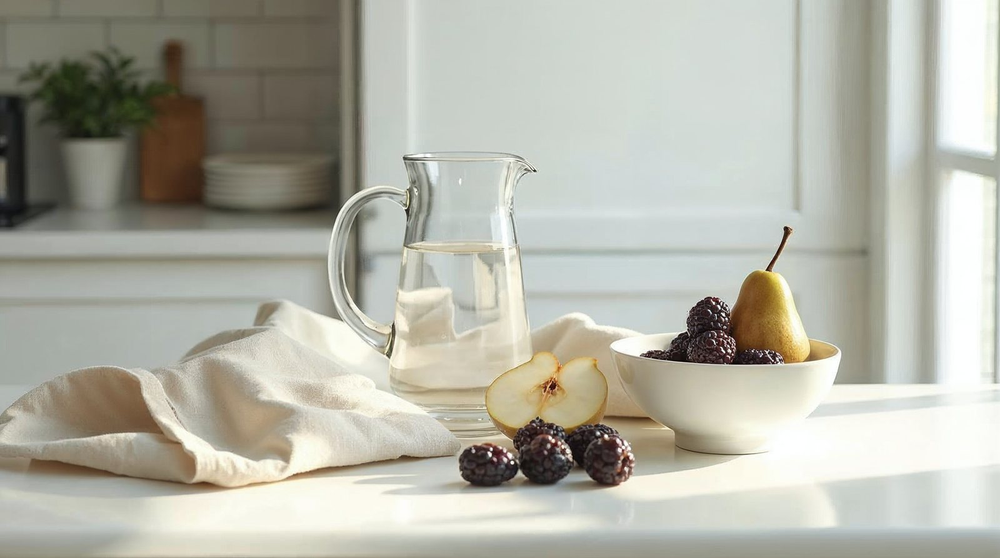
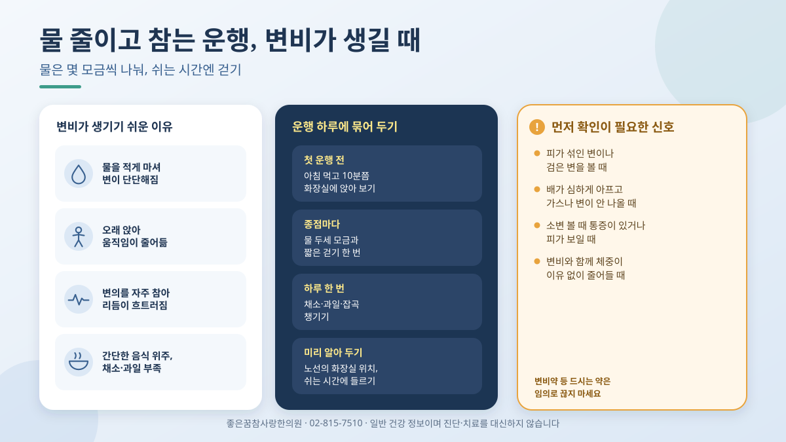

이종호 한의사 감수좋은꿈참사랑한의원 대표원장 (한의사 면허번호 19769)발행 2026-11-23 · 수정 2026-11-26
이 글의 차례
운행 중에는 화장실을 마음대로 가기 어려워 물을 일부러 덜 마신다는 기사님이 많습니다. 오래 앉아 있는 시간까지 겹치면 변비가 생기기 쉬워, 물 마시는 양과 식사, 화장실 가는 시간부터 함께 살펴봅니다.
버스는 배차 시간이, 택시는 손님과 콜이 하루의 흐름을 정합니다. 종점에서 쉬는 몇 분, 손님이 없는 짧은 틈에 화장실을 다녀와야 하니 '아예 덜 마시자'는 쪽을 택하게 되는 것도 이해가 됩니다.
그런데 물을 줄이고, 변의를 참고, 하루 대부분을 앉아서 보내는 생활이 겹치면 장은 점점 느려지기 쉽습니다. 저는 이 변비를 장 하나의 문제로 보기보다, 운행 일정이 만든 생활 리듬의 문제로 보고 그 리듬 안에서 바꿀 수 있는 것을 함께 찾습니다.
여쭤보면 원래 변비가 좀 있다며 웃어넘기시는 기사님이 많습니다. 하지만 오래 이어진 변비는 아랫배 불편과 치질, 입맛 저하, 잠의 질까지 건드리기도 해서, 생활 안에서 조금씩이라도 손보는 편이 좋습니다.
왜 이런 불편이 생길 수 있나요
- 물을 적게 마시면 장 안의 변이 단단해지기 쉽습니다.
- 오래 앉아 운전하면 몸을 움직일 기회가 줄어 장의 움직임도 더디게 느껴질 수 있습니다.
- 변의를 자주 참으면 화장실에 가는 리듬이 흐트러지는 경우가 있습니다.
- 운행 중 간단한 음식 위주로 먹다 보면 채소와 과일이 부족해지기 쉽습니다.
- 긴장하거나 스트레스가 많은 날에는 장의 움직임이 달라지는 분도 있습니다.
- 교대 근무로 식사 시각이 날마다 바뀌면, 장이 움직일 때를 잡기 어려워지기도 합니다.
- 철분제나 일부 진통제처럼 드시는 약이 영향을 주는 경우도 있습니다.
왜 변의를 참으면 변비가 더 굳어질까요?
장은 아침 식사 뒤나 몸을 움직일 때 변을 내보내려는 신호를 보냅니다. 이 신호가 왔을 때 화장실에 가지 못하고 참으면, 신호는 잠시 뒤 사그라듭니다. 이런 일이 되풀이되면 장은 신호를 점점 약하게 보내고, 변은 장 안에 머무는 동안 물기를 잃어 더 단단해집니다.
여기에 물까지 적게 마시면 변이 굳는 속도가 더 빨라집니다. 그래서 운행하는 분들의 변비는 '물을 덜 마심', '변의를 참음', '오래 앉아 있음' 세 가지가 서로를 키우는 모양이 많습니다.
한의학에서는 장이 제때 움직이려면 몸의 진액, 곧 몸을 적시는 물기와 기운의 흐름이 함께 필요하다고 봅니다. 물이 모자라 마르는 쪽인지, 긴장과 오래 앉은 자세로 흐름이 막히는 쪽인지를 나눠 살피면 생활에서 손볼 곳이 더 분명해집니다.
변비, 어떤 모양인지 먼저 나눠 볼까요?
- 변이 토끼 똥처럼 작고 단단하며 며칠에 한 번 본다면, 물과 식이섬유가 모자라지 않은지를 먼저 살핍니다.
- 변의는 오는데 화장실에 앉으면 잘 나오지 않고 개운하지 않다면, 참는 습관과 배변 자세를 함께 살핍니다.
- 배에 가스가 차고 아랫배가 더부룩하며 변비와 묽은 변이 번갈아 온다면, 긴장과 장의 예민함을 함께 살핍니다.
- 소변도 자주 참아 아랫배가 묵직하고 소변이 시원하지 않다면, 방광 쪽 불편도 함께 여쭙습니다.

먼저 이렇게 여쭙니다
- 하루에 물을 대략 얼마나 드시나요?
- 운행 중 화장실은 몇 번 가실 수 있나요?
- 변은 며칠에 한 번, 어떤 모양으로 보시나요?
- 변의를 참는 일이 자주 있나요?
- 식사는 주로 어떤 음식으로 하시나요?
- 근무가 오전·오후·야간으로 바뀌나요, 일정한 편인가요?
- 커피나 음료는 하루 몇 잔 드시나요?
- 최근 새로 먹기 시작한 약이 있나요?

일상에서 먼저 해 볼 수 있는 것
- 운행 전후와 휴식 시간에 물을 몰아서가 아니라 몇 모금씩 나눠 마시기
- 휴식 시간에는 차에서 내려 몇 분이라도 걷기
- 채소, 과일, 잡곡을 하루 한 번은 챙기기
- 아침 식사 뒤 집에서 화장실에 앉아 보는 시간 정해 두기
- 노선의 화장실 위치를 미리 알아 두고 쉬는 시간에 들르기
예를 들어 첫 운행 전 집에서 아침을 먹고 잠깐 화장실에 앉아 보는 시간을 두고, 종점에 도착할 때마다 물 두세 모금과 짧은 걷기를 하나로 묶어 보세요. 한 번에 많이 마시기보다 몇 모금씩 나눠 마시는 편이 화장실 부담이 덜합니다.
화장실에 앉을 때는 발밑에 낮은 받침을 두어 무릎이 엉덩이보다 조금 높게 올라가게 하고, 상체를 살짝 앞으로 숙여 보세요. 힘을 세게 주기보다 숨을 내쉬며 배에 부드럽게 힘을 줘 봅니다. 10분쯤 앉아도 나오지 않으면 억지로 힘주지 말고 일어나 다음 기회를 기다립니다. 휴대전화를 보며 오래 앉아 있는 습관은 줄이는 것이 좋습니다.
물은 언제, 얼마나 마시면 화장실 부담이 덜할까요?
물을 하루 몇 리터씩 마시라는 말은 운행하는 분께 현실적이지 않습니다. 대신 마시는 때를 운행 일정에 맞춰 나누면, 같은 양이라도 화장실 부담이 훨씬 덜합니다.
- 출근 전: 일어나서 미지근한 물 한 컵. 아침 식사와 함께 장을 깨우는 데 도움이 됩니다.
- 운행 중: 화장실에 들른 직후 두세 모금. 다음 화장실까지의 시간을 생각해 양을 정합니다.
- 식사 때: 국이나 차로 물기를 함께 보충합니다.
- 퇴근 뒤: 저녁 식사 전후로 한두 컵. 잠들기 두 시간 전부터는 조금 줄입니다.
커피를 여러 잔 마시는 분은 커피만큼 물도 한 잔 곁들여 보세요. 커피는 소변을 자주 마렵게 하는 편이라 운행 중 화장실 부담을 키우기 쉽고, 물 대신으로 여기기는 어렵습니다.
식사에서 바꿔 볼 수 있는 것
- 흰쌀밥 대신 잡곡을 조금 섞거나, 김밥을 고를 때 채소가 많은 것을 고릅니다.
- 하루 한 번은 나물, 쌈 채소, 미역국처럼 섬유질과 물기가 함께 있는 반찬을 챙깁니다.
- 바나나, 사과, 귤처럼 들고 먹기 쉬운 과일을 차에 두고 간식으로 바꿔 봅니다.
- 기름진 튀김과 빵, 라면 위주의 끼니가 이어지는 날을 줄여 봅니다.
식이섬유를 갑자기 많이 늘리면 오히려 배에 가스가 차고 더부룩하다는 분이 있습니다. 물을 함께 늘리면서 며칠에 걸쳐 조금씩 늘려 가세요.
운행 틈틈이, 차를 세우고 할 수 있는 움직임
- 차를 세워 두고 쉬는 동안 엉덩이를 좌우로 번갈아 들썩여 골반 주변을 움직여 줍니다.
- 숨을 크게 들이쉬어 배를 부풀리고 천천히 내쉬며 배를 등 쪽으로 당기는 호흡을 몇 번 반복합니다.
- 종점이나 휴게 시간에는 차에서 내려 허리를 좌우로 천천히 돌리고, 발뒤꿈치를 들었다 내리는 동작을 해 봅니다.
이런 움직임은 장을 직접 움직이게 하려는 것이 아니라, 오래 굳어 있던 배와 골반 주변을 깨워 주는 정도로 생각하시면 됩니다. 안전이 먼저이니 운전 중이나 신호 대기 중에는 하지 말고, 차를 완전히 세워 둔 뒤에만 해 주세요.
퇴근 뒤 집에서는 누운 채로 무릎을 세우고 배꼽 주변을 손바닥으로 시계 방향을 따라 천천히 둥글게 문질러 보는 분도 있습니다. 세게 누르기보다 따뜻한 손으로 부드럽게 쓸어 주는 정도면 충분합니다.
상황별 예시
예를 들어 한 바퀴 도는 데 한 시간이 넘게 걸리는 노선이라면, 종점에 도착해 먼저 화장실에 들르고 돌아와서 물 두세 모금을 마시는 순서를 정해 보세요. 다음 종점까지 마신 물이 부담되지 않게 맞추는 방법입니다.
점심을 편의점 김밥으로 해결하는 날이 많다면, 김밥에 바나나나 사과 한 개, 무가당 요구르트를 더하고 저녁에는 집에서 나물과 잡곡밥으로 채소를 보충해 봅니다.
야간 운행을 마치고 아침에 퇴근해 바로 잠드는 경우도 있지요. 잠들기 전 가볍게 먹고 화장실에 앉아 보는 시간을 두고, 일어난 뒤 첫 식사 뒤에도 같은 시간을 두어 하루 두 번 기회를 만들어 봅니다.
쉬는 날은 장의 리듬을 되찾는 날
쉬는 날이 되면 늦잠을 자고 끼니를 한두 번으로 줄이는 분이 많습니다. 그러면 모처럼 화장실을 편히 쓸 수 있는 날인데도 장이 움직일 계기가 줄어듭니다.
쉬는 날에도 일어나는 시각을 크게 늦추지 말고, 아침을 먹은 뒤 화장실에 여유 있게 앉아 보세요. 오전에 걷거나 가벼운 집안일로 몸을 움직여, 장이 움직일 계기를 만들어 주는 것도 좋습니다. 운행일에 못 챙긴 채소와 과일, 물을 넉넉히 보충하기에도 좋은 날입니다.
겨울에 변비가 더 심해지는 것 같다면
겨울에는 땀을 덜 흘려 물을 마시고 싶은 마음도 줄어듭니다. 차 안 히터 바람에 몸의 물기는 더 마르는데 마시는 양은 줄어드니, 변이 더 단단해지기 쉽습니다.
보온병에 따뜻한 보리차나 물을 담아 두고 조금씩 마셔 보세요. 찬물보다 미지근하거나 따뜻한 물이 속에 부담이 덜하고, 추운 날 몸을 데워 주는 역할도 합니다.
스스로 점검해 보세요
- 화장실 걱정 때문에 물을 일부러 덜 마신다.
- 변의가 와도 운행 중이라 참는 날이 일주일에 사흘 이상이다.
- 변을 사흘 넘게 보지 못하는 일이 잦다.
- 변이 작고 단단해 볼 때 힘을 많이 줘야 한다.
- 하루 식사에 채소나 과일이 거의 없다.
- 쉬는 날에는 배변이 한결 편하다.
- 변비약을 먹지 않으면 일주일 가까이 변을 보지 못한다.
점검 항목 가운데 서너 개 이상이 해당된다면, 물과 화장실 습관을 먼저 바꿔 보면서 2주 정도 기록을 남겨 보세요. 기록이 쌓이면 진료실에서도 어느 부분부터 손볼지 훨씬 구체적으로 이야기할 수 있습니다.

한의원에서 함께 살필 수 있는 경우
- 물과 식사를 줄인 뒤 변비가 이어지는 경우 생활 습관과 장의 리듬을 함께 살핍니다.
- 오래 앉아 있어 배가 더부룩한 경우 움직임과 소화를 함께 살핍니다.
- 소변을 자주 참는 경우 아랫배 불편감과 생활을 함께 살핍니다.
좋은꿈참사랑한의원에서는 모든 분의 맥을 먼저 짚고, 운행 일정과 식사, 배변 리듬을 충분히 듣습니다. 필요하다고 판단될 때 설진·복진으로 배의 상태도 살핀 뒤, 상태에 맞춰 침이나 한약 상담 등을 정합니다. 귀가 전에는 운행 중에도 지킬 수 있는 물 마시는 순서를 함께 정리합니다.
첫 방문에서는 하루 운행 일정을 시간 순서대로 여쭙고, 화장실에 갈 수 있는 지점과 식사 시각을 함께 봅니다. 오래 앉아 허리나 엉덩이가 뻐근하다면 그 부분도 말씀해 주세요. 드시는 변비약이나 혈압약 같은 약이 있다면 이름을 알려 주시고, 한약 상담은 그 약을 먼저 확인한 뒤 정합니다.
얼마나 지켜보고 언제 상담할까요
- 물을 나눠 마시는 순서와 아침 화장실 시간, 휴식 때 걷기를 2~3주 이어 가며 배변 날짜와 모양을 적어 봅니다.
- 그래도 사흘 넘게 변을 보지 못하는 일이 이어지거나, 변비약 없이는 볼 수 없는 날이 늘었다면 상담을 받아 보세요.
- 변을 볼 때마다 항문이 찢어질 듯 아프다면, 세게 힘주는 습관이 항문에 부담을 주고 있지 않은지 돌아볼 때입니다.
- 평소와 다른 배변 변화가 몇 주째 이어진다면, 나이와 관계없이 내과에서 대장 검사가 필요한지 먼저 확인해 보시길 권합니다.

이렇게 기록해 오시면 상담이 쉬워집니다
- 하루 동안 마신 물의 양(컵 수)
- 배변 날짜와 모양
- 운행 중 화장실에 간 횟수
- 커피와 음료를 마신 잔 수
- 변의가 왔는데 참았던 때와 그 시각
- 복용 중인 변비약, 위장약, 소변 관련 약
변의 모양은 "단단함·보통·묽음" 세 가지로만 적어도 충분합니다. 근무표 옆에 함께 적으면 오전 근무와 야간 근무에 따라 배변이 어떻게 달라지는지도 함께 보입니다.
화장실 한 번 가는 일까지 배차와 손님에 맞춰야 하는 하루였을 겁니다. 그 속에서 물 한 모금을 줄이는 쪽을 택해 오신 것도 충분히 이해가 됩니다. 다음에 오시면 이번 주에 물을 몇 컵 드셨는지, 변의 모양은 어땠는지부터 여쭙겠습니다.
이런 증상은 먼저 확인이 필요합니다
- 피가 섞인 변이나 검은 변을 보는 경우
- 배가 심하게 아프거나 가스조차 나오지 않는 경우
이런 신호가 있으면 한의원보다 가까운 병원이나 응급실을 먼저 찾으세요.
관련 글
- 택시 운전을 오래 하다 차에서 내릴 때 허리를 바로 펴기 힘들 때는 어떻게 살피나요?
- 배가 더부룩하게 아프고 변을 봐도 시원하지 않은 변비형 과민성 장은 어떻게 살피나요?
- 소변이 너무 자주 마려운 빈뇨, 물·카페인·방광 습관·혈당은 어떻게 나눠 살피나요?

여쭙는 것
- 하루에 물을 대략 얼마나 드시나요?
- 운행 중 화장실은 몇 번 가실 수 있나요?
- 변은 며칠에 한 번, 어떤 모양으로 보시나요?
생활에서 해 볼 것
- 운행 전후와 휴식 시간에 물을 몰아서가 아니라 몇 모금씩 나눠 마시기
- 휴식 시간에는 차에서 내려 몇 분이라도 걷기
- 채소, 과일, 잡곡을 하루 한 번은 챙기기
한의원에서 함께 살필 것
- 물과 식사를 줄인 뒤 변비가 이어지는 경우 생활 습관과 장의 리듬을 함께 살핍니다.
- 오래 앉아 있어 배가 더부룩한 경우 움직임과 소화를 함께 살핍니다.
- 소변을 자주 참는 경우 아랫배 불편감과 생활을 함께 살핍니다.
먼저 확인이 필요한 신호
- 피가 섞인 변이나 검은 변을 보는 경우
- 배가 심하게 아프거나 가스조차 나오지 않는 경우
한눈에 보는 표
| 구분 | 핵심 |
|---|---|
| 여쭙는 것 | 하루에 물을 대략 얼마나 드시나요? 운행 중 화장실은 몇 번 가실 수 있나요? |
| 생활에서 해 볼 것 | 운행 전후와 휴식 시간에 물을 몰아서가 아니라 몇 모금씩 나눠 마시기 휴식 시간에는 차에서 내려 몇 분이라도 걷기 |
| 한의원에서 함께 살필 것 | 물과 식사를 줄인 뒤 변비가 이어지는 경우 생활 습관과 장의 리듬을 함께 살핍니다. 오래 앉아 있어 배가 더부룩한 경우 움직임과 소화를 함께 살핍니다. |
| 먼저 확인이 필요한 신호 | 피가 섞인 변이나 검은 변을 보는 경우 배가 심하게 아프거나 가스조차 나오지 않는 경우 |
자주 묻는 질문
변비약을 계속 먹어도 되나요?
오래 드셨다면 처방한 의사나 약사와 상의하세요. 생활 습관도 함께 살펴봅니다.
소변을 자주 참는 것도 문제가 되나요?
반복되면 불편감이 생길 수 있어 휴식 시간에 맞춰 화장실에 가는 습관을 권합니다. 소변 볼 때 아프거나 열이 나면 미루지 말고 진료를 먼저 받으세요.
교대 근무라 쉬는 날에만 갈 수 있어요.
좋은꿈참사랑한의원은 토·일·공휴일에도 09:30~15:00(점심시간 없음)에 진료하고, 평일은 09:30~20:00(점심 13:00~14:00)입니다.
섬유질 보충제를 먹어도 되나요?
드시는 분도 있지만 물을 함께 충분히 마셔야 합니다. 드시는 제품 이름을 알려 주시면 생활과 함께 확인합니다.
좋은꿈참사랑한의원은 재진 때 지난번 이야기부터 이어서 여쭙니다. 진료시간과 예약은 오시는 길에서 확인하세요.
어디서 상담받을 수 있나요?
좋은꿈참사랑한의원은 서울 동작구 만양로2길 2 신성빌딩 3층·5층(서울 동작구 상도동, 7호선 상도역 3번 출구 근처)에 있습니다. 한의사 3명(이종호 대표원장, 조영기 수석진료원장, 정원영 진료원장)이 진료합니다. 진료시간은 평일 09:30~20:00(점심 13:00~14:00), 토·일·공휴일 09:30~15:00이며, 방문 전 전화로 확인을 권합니다. 예약은 네이버 예약, 카카오톡 상담, 전화 02-815-7510로 받습니다.
이 글은 일반적인 건강 정보이며 개인의 진단이나 치료를 대신하지 않습니다. 증상이 있거나 복용 중인 약이 있다면 진료를 통해 확인하세요. 치료 효과는 개인마다 다를 수 있습니다.
작성 기준: 일반적으로 알려져 있는 건강 정보를 참고해 정리했습니다(대표원장 감수). 증상 기록은 1~2주 동안 하루 1회, 비슷한 시간에 적어 오시면 지난 상태와 비교하기 쉽습니다.